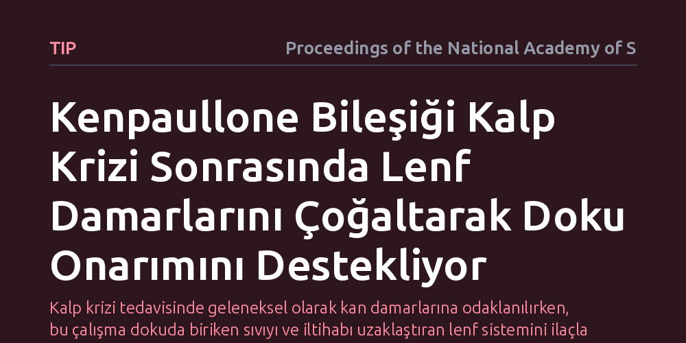

TIP · Proceedings of the National Academy of Sciences · 2026-10-17
Araştırmacılar, kalp krizinin ardından kalbin onarımını hızlandıracak ve yeni lenf damarlarının oluşumunu tetikleyecek ilaç adayı bileşikleri araştırdı. Yapılan fenotipik taramalarda kenpaullone adlı molekülün lenf damarı gelişimini uyararak kalp dokusunun iyileşmesine katkı sağladığı belirlendi.
Kalp krizi tedavisinde geleneksel olarak kan damarlarına odaklanılırken, bu çalışma dokuda biriken sıvıyı ve iltihabı uzaklaştıran lenf sistemini ilaçla uyararak kalbi iyileştirmenin mümkün olduğunu gösteriyor.

Kalp krizi, kalbi besleyen damarların aniden tıkanması sonucu kalp kasının oksijensiz kalmasıyla meydana gelir. Kriz sonrasında hasarlı bölgede yoğun bir bağışıklık yanıtı başlar, iltihaplanma gelişir ve doku içinde ciddi miktarda sıvı toplanır. Kalp dokusundaki bu aşırı sıvı birikimi ve kontrolsüz iltihap, zamanla sağlıklı kas dokusunun yerini sert yara dokusunun almasına ve uzun vadede kalp yetmezliğine zemin hazırlar.
Yıllardır kalp krizinin tedavisinde temel yaklaşım, tıkanan kan damarlarını açmak veya yeni kan damarlarının oluşmasını desteklemek üzerine kuruluydu. Ancak kalpte en az kan damarları kadar önemli başka bir dolaşım ağı daha bulunur: lenf sistemi. Lenf damarları, dokuda biriken fazla sıvıyı, iltihap kalıntılarını ve görevini tamamlamış bağışıklık hücrelerini toplayıp uzaklaştıran bir drenaj sistemi gibi çalışır. Bilim insanlarının önündeki temel soru, bu lenf damarlarının büyümesini tetikleyerek kalbin kendi kendini iyileştirme kapasitesini artıracak bir ilacın bulunup bulunamayacağıydı.
Araştırmacılar, lenf damarlarının oluşumunu yani lenfanjiyogenezi uyarabilecek kimyasal maddeleri bulmak için fenotipik tarama yöntemini tercih etti. Geleneksel ilaç keşfinde genellikle önceden belirlenmiş tek bir proteine bağlanan moleküller aranırken, fenotipik taramada doğrudan hücrenin verdiği biyolojik yanıt ölçülür. Bu sayede araştırmacılar, mekanizması baştan bilinmese dahi hücrede istenen yapısal değişimi başlatan molekülleri tespit edebilir.
Laboratuvar ortamında yürütülen bu geniş çaplı deneylerde, lenf damarlarının iç yüzeyini döşeyen endotel hücreleri kullanıldı. Binlerce küçük kimyasal molekül bu hücrelerle buluşturularak hücrelerin çoğalma, göç etme ve yeni damar tüpleri oluşturma kabiliyetleri hassas ölçümlerle takip edildi. Bu sistematik tarama süreci, lenf damarı oluşumunu tetikleme potansiyeline sahip en güçlü adayı ortaya çıkardı.
Yapılan deneyler sonucunda kenpaullone adı verilen küçük molekül belirgin bir şekilde öne çıktı. Bir kinaz enzimi baskılayıcısı olarak bilinen kenpaullone, lenf endotel hücrelerinde güçlü bir hareketlilik başlatarak yeni lenf damarlarının filizlenmesini tetikledi. Molekülün varlığında lenf hücrelerinin organize damar benzeri yapılar oluşturma hızının belirgin biçimde arttığı gözlendi.
Kalp krizi modellerinde yapılan incelemelerde ise kenpaullone uygulamasının kalpteki lenf damarı ağını genişlettiği gösterildi. Gelişen bu yeni lenf damarları sayesinde enfarktüs bölgesinde biriken iltihaplı sıvı hızla tahliye edildi, zararlı iltihap hücreleri ortamdan uzaklaştırıldı ve kalbin pompalama gücünü korumasına yardımcı olan yapısal iyileşmeler kaydedildi.
Elde edilen sonuçlar, kalp krizini takip eden süreçte lenf sistemini ilaçla uyarmanın kalp onarımını güçlendiren uygulanabilir bir tedavi yaklaşımı olabileceğini gösteriyor. Özellikle küçük bir kimyasal molekülün bu süreci başarıyla tetikleyebilmesi, gelecekte pratik biçimde uygulanabilecek yeni ilaç formülasyonlarının geliştirilmesine kapı aralıyor.
Bununla birlikte, çalışmanın henüz laboratuvar ve hücresel düzeyde bir keşif olduğunu akılda tutmak gerekir. Kenpaullone bileşiğinin kalp dışındaki diğer organlarda istenmeyen etkilere yol açıp açmadığı, güvenli doz sınırları ve insan biyolojisindeki etkinliği henüz bilinmiyor. Bu nedenle bulgular, doğrudan bir klinik tedavi müjdesinden ziyade, kalp onarımında lenf sistemini hedef alan yeni ilaç geliştirme çalışmalarına yön veren güçlü bir bilimsel basamak olarak değerlendirilmelidir.